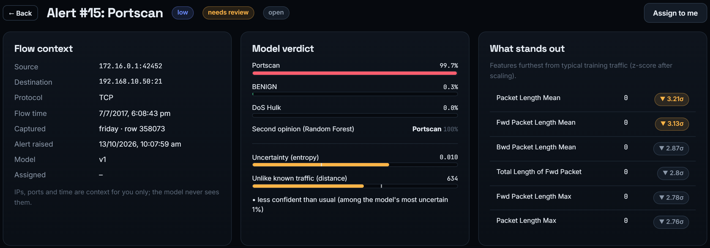
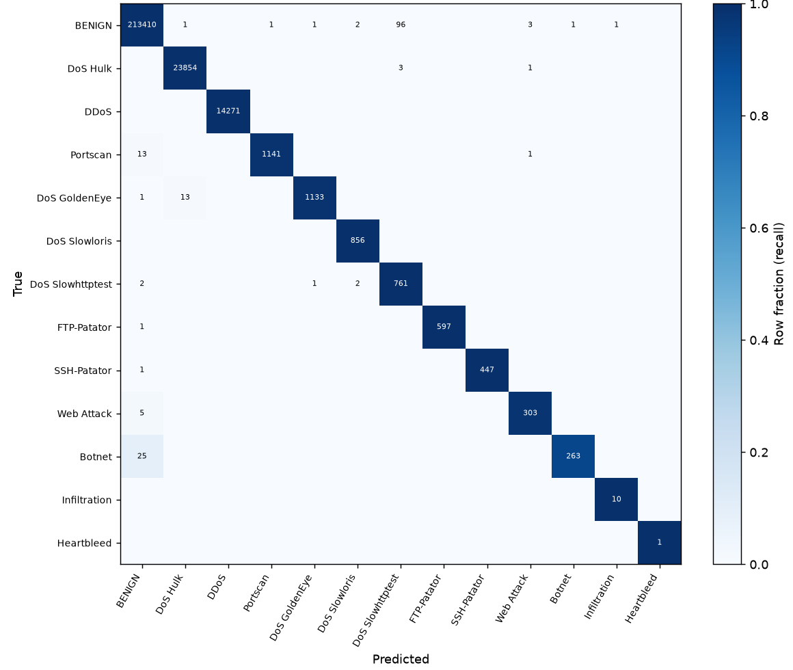
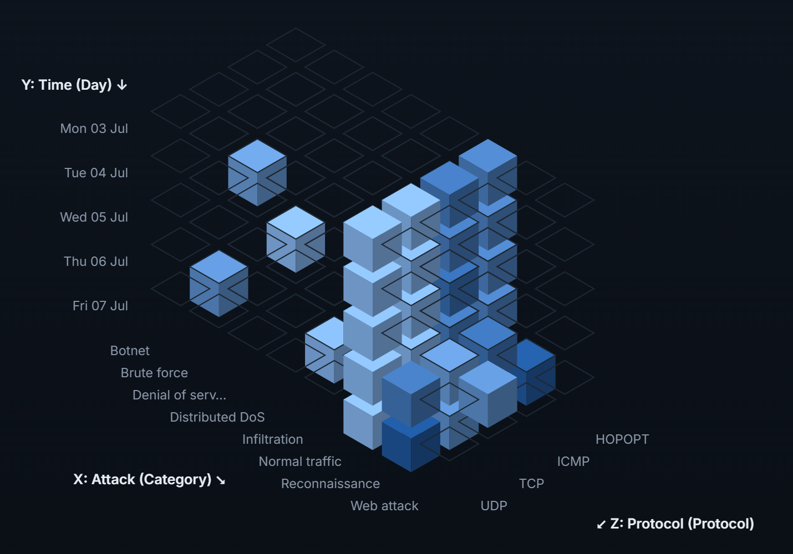

Sentinel: AI-Based Intrusion Detection System
with Human Review and Data Warehouse
Introduction
Sentinel detects network attacks with a CNN-LSTM model. Uncertain flows go to a security analyst, and all data is stored in a warehouse for OLAP analysis.
Objectives
- Detect 12 types of attacks
- Send uncertain flows to an analyst
- Retrain only on verified feedback
- Analyse traffic using OLAP
Dataset
Improved CIC-IDS2017
| Flows after cleaning | 1,714,812 |
| Features | 64 |
| Classes | 13 |
| Train / validation / test | 70/15/15 % |
Attacks: DoS (4 types), DDoS, Port scan, FTP and SSH brute force, Web attack, Botnet, Infiltration, Heartbleed.
Methodology
- Clean data, drop IPs and ports.
- CNN-LSTM predicts the class of each flow.
- Uncertainty check (entropy, distance, Random Forest).
- Unsure flows go to the analyst.
- Verified decisions retrain the model.

System Architecture
Results
| Model | Accuracy | Precision | Recall | F1 |
|---|---|---|---|---|
| Random Forest | 99.97 | 99.90 | 99.92 | 99.91 |
| LightGBM | 99.96 | 99.84 | 99.91 | 99.88 |
| CNN-LSTM | 99.89 | 99.71 | 99.75 | 99.73 |
Values in %, measured on the 15% test data (never used in training).
With the uncertainty check, only 1.48% of flows go to the analyst; automatic decisions are 99.999% correct.

Data Warehouse
ETL (extract, transform, load) copies flows, alerts and reviews into a separate warehouse.
Star schema: one fact table and five dimensions
Also built: snowflake and fact constellation schemas, an hourly aggregate table and data marts.
OLAP Analysis

- Roll-up: attack type to benign / malicious
- Drill-down: Wednesday to hours
- Slice: only HTTP traffic
- Dice: day + attack + service
- Pivot: swap rows and columns
Attack flows per day
Conclusion
The CNN-LSTM detects attacks with 99.73% F1, and only doubtful flows reach a human. The warehouse makes the traffic and alert history easy to analyse.
Future scope: detect slow attacks such as SSH brute force; test on CSE-CIC-IDS2018.
Tools Used
Python, PyTorch, scikit-learn, FastAPI, SQLite, React
github.com/
JaiChavan040906/IDS